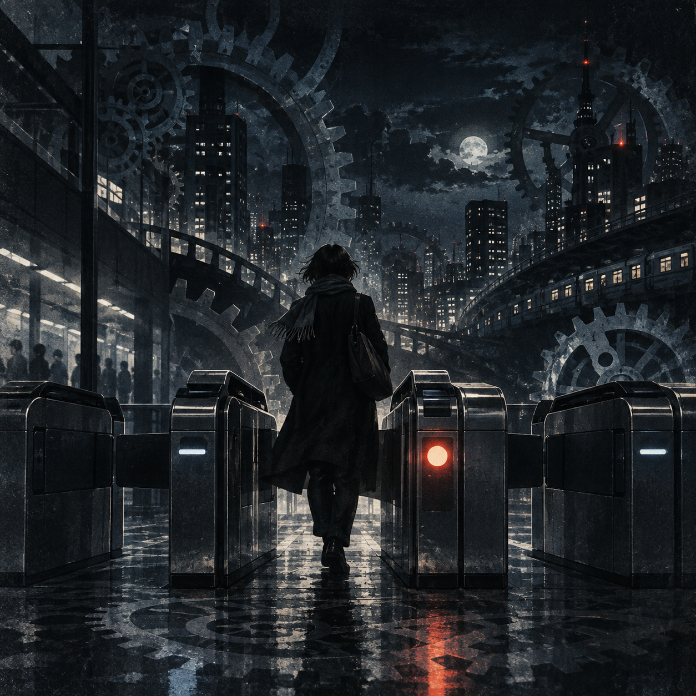
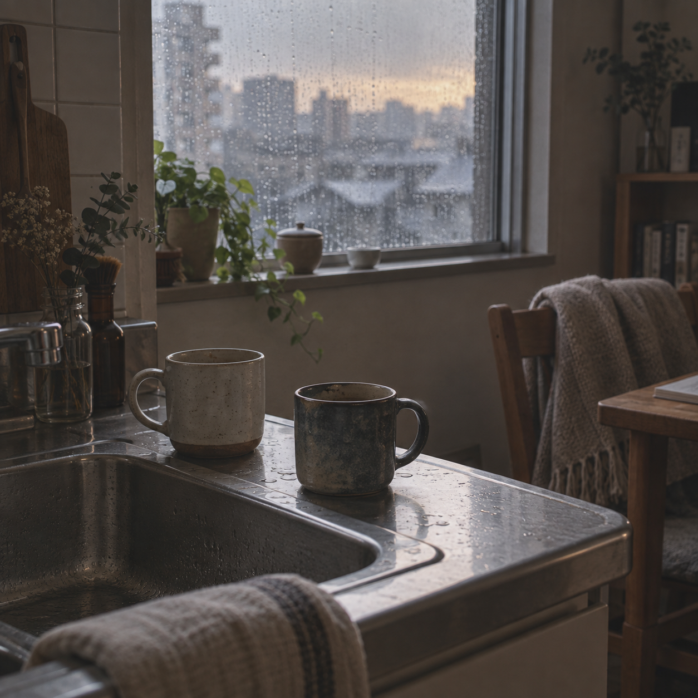
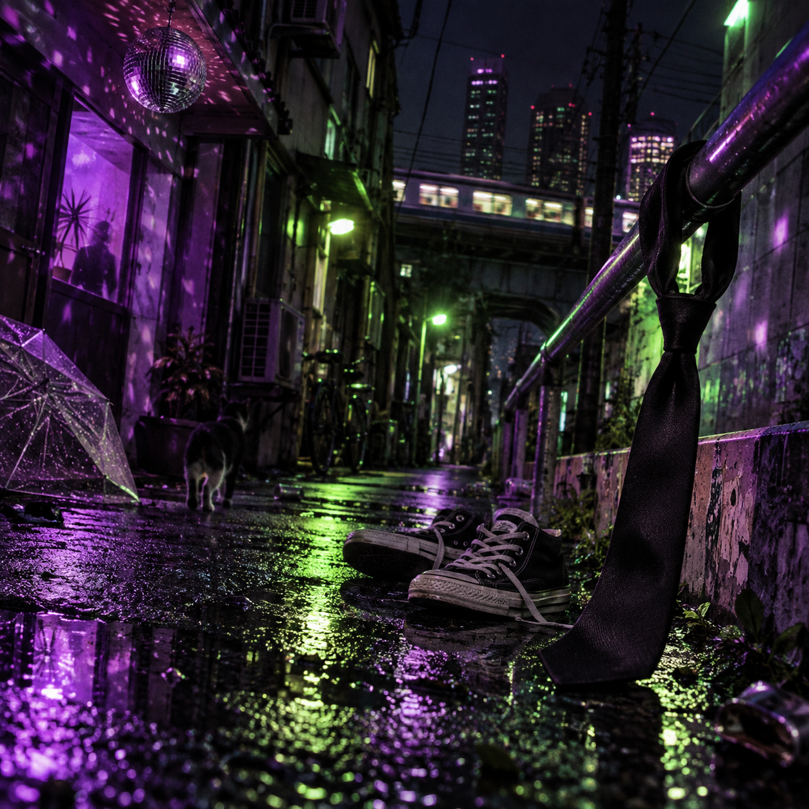
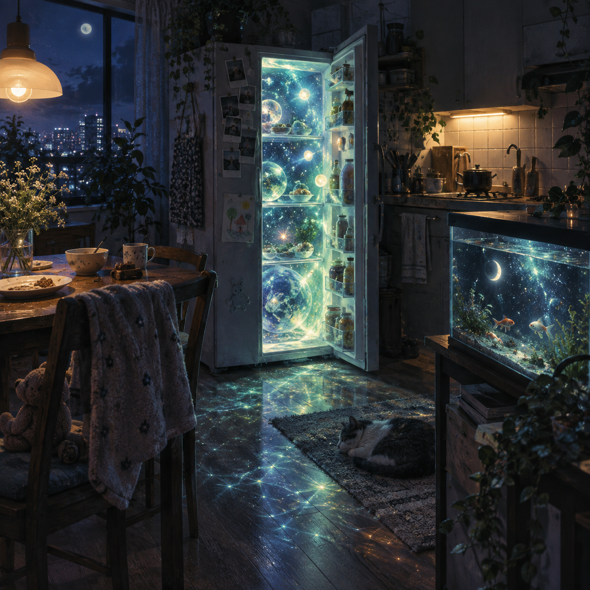
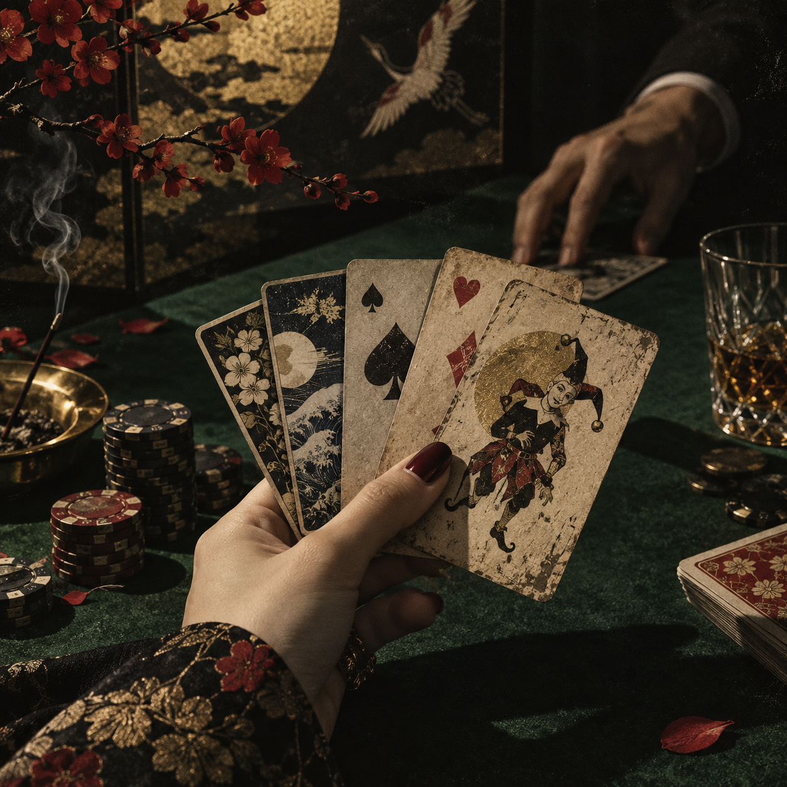

改札は通過点で、心臓は通行証ではない。
作品ページで聴く →ORIGINAL TRACKS / 2026
8曲のジャケットと、作品の小さな入口。
気になった曲のページで、音楽を聴く。
08 / TRACK NOTES

改札は通過点で、心臓は通行証ではない。
作品ページで聴く →夜更かしは罪じゃない。時計に謝る必要もない。
作品ページで聴く →
生活は、映画にならないから長い。
作品ページで聴く →列を外れると、影が先に手を振る。
作品ページで聴く →
帰れない夜は、少しだけ自由に見える。
作品ページで聴く →残ったものほど、帰る場所を知っている。
作品ページで聴く →
家族は、だいたい説明できない。
作品ページで聴く →
悪い手札ほど、話は面白くなる。
作品ページで聴く →